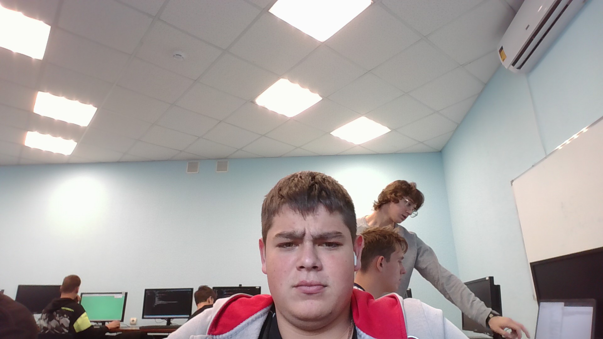

Какой-то заголовок
текст
выделенный текст
- курсив
- подчеркнутый
- перечеркнутый
- уменьшить шрифт
- надиндекс
- подиндекс
- пам парам
выделение важных фрагментов курсивом
-
выделение особо важных фрагментов полужирным
- выделение фрагмента подчеркиванием, когда требуется
показать явно, что текст был вставлен после опубликования
документа.
- выделение фрагмента перечеркиванием, когда
требуется показать явно, что текст был удален после
опубликования документа.
- выделение цитат курсивом
- отображение фрагментов программного кода
моноширинным шрифтом
Ссылка на заголовок
Visit Yandex!
Ссылка
